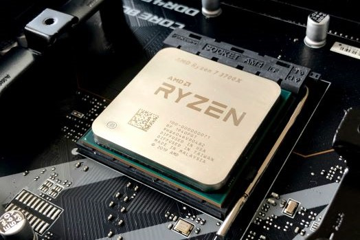

CPU - AMD vs Intel
Computer Processor Characteristics
Here are the important characteristics of processors:
Processor Make and Model
The primary defining characteristic of a processor is its make AMD or Intel and its model. Although competing models from the two companies have similar features and performance, you cannot install an AMD processor in an Intel-compatible motherboard or vice versa.
Socket Type
Another defining characteristic of a processor is the socket that it is designed to fit. If you are replacing the processor in a Socket 478 motherboard, for example, you must choose a replacement processor that is designed to fit that socket.
Clock Speed
The clock speed of a processor, which is specified in megahertz (MHz) or gigahertz (GHz), determines its performance, but clock speeds are meaningless across processor lines. For example, a 3.2 GHz Prescott-core Pentium 4 is about 6.7% faster than a 3.0 GHz Prescott-core Pentium 4, as the relative clock speeds would suggest. However, a 3.0 GHz Celeron processor is slower than a 2.8 GHz Pentium 4, primarily because the Celeron has a smaller L2 cache and uses a slower host-bus speed. Similarly, when the Pentium 4 was introduced at 1.3 GHz, its performance was actually lower than that of the 1 GHz Pentium III processor that it was intended to replace. That was true because the Pentium 4 architecture is less efficient clock-for-clock than the earlier Pentium III architecture.
Clock speed is useless for comparing AMD and Intel processors. AMD processors run at much lower clock speeds than Intel processors, but do about 50% more work per clock tick. Broadly speaking, an AMD Athlon 64 running at 2.0 GHz has about the same overall performance as an Intel Pentium 4 running at 3.0 GHz.
MODEL NUMBERS VERSUS CLOCK SPEEDS
Because AMD is always at a clock speed disadvantage versus Intel, AMD uses model numbers rather than clock speeds to designate their processors. For example, an AMD Athlon 64 processor that runs at 2.0 GHz may have the model number 3000+, which indicates that the processor has roughly the same performance as a 3.0 GHz Intel model. (AMD fiercely denies that their model numbers are intended to be compared to Intel clock speeds, but knowledgeable observers ignore those denials.)
Intel formerly used letter designations to differentiate between processors running at the same speed, but with a different host-bus speed, core, or other characteristics. For example, 2.8 GHz Northwood-core Pentium 4 processors were made in three variants: the Pentium 4/2.8 used a 400 MHz FSB, the Pentium 4/2.8B the 533 MHz FSB, and the Pentium 4/2.8C the 800 MHz FSB. When Intel introduced a 2.8 GHz Pentium 4 based on their new Prescott-core, they designated it the Pentium 4/2.8E.
Interestingly, Intel has also abandoned clock speed as a designator. With the exception of a few older models, all Intel processors are now designated by model number as well. Unlike AMD, whose model numbers retain a vestigial hint at clock speed, Intel model numbers are completely dissociated from clock speeds. For example, the Pentium 4 540 designates a particular processor model that happens to run at 3.2 GHz. The models of that processor that run at 3.4, 3.6, and 3.8 GHz are designated 550, 560, and 570 respectively.
Host-bus speed
The host-bus speed, also called the front-side bus speed, FSB speed, or simply FSB, specifies the data transfer rate between the processor and the chipset. A faster host-bus speed contributes to higher processor performance, even for processors running at the same clock speed.


AMD and Intel implement the path between memory and cache differently, but essentially FSB is a number that reflects the maximum possible quantity of data block transfers per second. Given an actual host-bus clock rate of 100 MHz, if data can be transferred four times per clock cycle (thus "quad-pumped"), the effective FSB speed is 400 MHz.
For example, Intel has produced Pentium 4 processors that use host-bus speeds of 400, 533, 800, or 1066 MHz. A 2.8 GHz Pentium 4 with a host-bus speed of 800 MHz is marginally faster than a Pentium 4/2.8 with a 533 MHz host-bus speed, which in turn is marginally faster than a Pentium 4/2.8 with a 400 MHz host-bus speed. One measure that Intel uses to differentiate their lower-priced Celeron processors is a reduced host-bus speed relative to current Pentium 4 models. Celeron models use 400 MHz and 533 MHz host-bus speeds.
All Socket 754 and Socket 939 AMD processors use an 800 MHz host-bus speed. (Actually, like Intel, AMD runs the host bus at 200 MHz, but quad-pumps it to an effective 800 MHz.) Socket A Sempron processors use a 166 MHz host bus, double-pumped to an effective 333 MHz host-bus speed.
Cache size
Processors use two types of cache memory to improve performance by buffering transfers between the processor and relatively slow main memory. The size of Layer 1 cache (L1 cache, also called Level 1 cache), is a feature of the processor architecture that cannot be changed without redesigning the processor. Layer 2 cache (Level 2 cache or L2 cache), though, is external to the processor core, which means that processor makers can produce the same processor with different L2 cache sizes. For example, various models of Pentium 4 processors are available with 512 KB, 1 MB, or 2 MB of L2 cache, and various AMD Sempron models are available with 128 KB, 256 KB, or 512 KB of L2 cache.
For some applications particularly those that operate on small data sets a larger L2 cache noticeably increases processor performance, particularly for Intel models. (AMD processors have a built-in memory controller, which to some extent masks the benefits of a larger L2 cache.) For applications that operate on large data sets, a larger L2 cache provides only marginal benefit.
Process size
Process size, also called fab (fabrication) size, is specified in nanometers (nm), and defines the size of the smallest individual elements on a processor die. AMD and Intel continually attempt to reduce process size (called a die shrink) to get more processors from each silicon wafer, thereby reducing their costs to produce each processor. Pentium II and early Athlon processors used a 350 or 250 nm process. Pentium III and some Athlon processors used a 180 nm process. Recent AMD and Intel processors use a 130 or 90 nm process, and forthcoming processors will use a 65 nm process.
Process size matters because, all other things being equal, a processor that uses a smaller process size can run faster, use lower voltage, consume less power, and produce less heat. Processors available at any given time often use different fab sizes. For example, at one time Intel sold Pentium 4 processors that used the 180, 130, and 90 nm process sizes, and AMD has simultaneously sold Athlon processors that used the 250, 180, and 130 nm fab sizes. When you choose an upgrade processor, give preference to a processor with a smaller fab size.